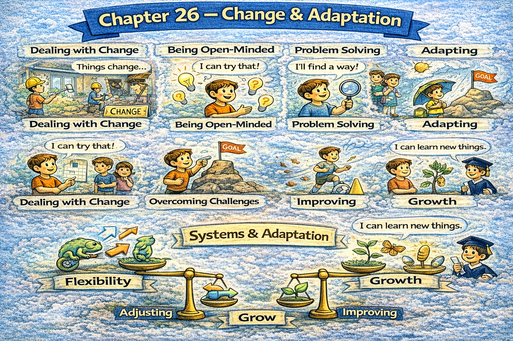

Chapter 26 — Change & Adaptation

Micro Scene 1 — The Nature of Change
1️⃣ Scene Text
Change is constant, even when stability appears dominant.
Systems evolve gradually or shift abruptly under pressure.
If conditions remain static, adaptation slows.
Change may be incremental or disruptive.
I distinguish between surface modification and structural transformation.
When pressure accumulates, transition accelerates.
Resistance often accompanies uncertainty.
Not all change produces improvement.
Adjustment requires awareness of context.
Change reveals system flexibility.
Adaptation determines long-term survival.
2️⃣ Core Verb Pool
appear
evolve
shift
remain
slow
distinguish
accelerate
accompany
produce
require
reveal
determine
3️⃣ Structure Patterns
X is + adjective even when + clause
If X + verb, Y + verb
X may be A or B
When X + verb, Y + verb
X determines Y
4️⃣ Replace & Extend
Replace incremental:
Change may be gradual.
→ Change may unfold slowly.
→ Change may accumulate quietly.
Replace disruptive:
Change may be sudden.
→ Change may destabilize structure.
→ Change may redefine direction.
Replace survival:
Adaptation ensures continuity.
→ Flexibility supports resilience.
→ Adjustment preserves stability.
5️⃣ Spoken Mode
Change is constant, even when things seem stable.
Sometimes it’s slow, sometimes it’s sudden.
Not all change improves things.
Adaptation keeps systems alive.
🔎 Structural Notes
• “incremental vs disruptive” = tempo contrast.
• Adaptation links change to survival.
• Change exposes rigidity.
Micro Scene 2 — Resistance to Change
1️⃣ Scene Text
Resistance often emerges when change threatens stability.
People prefer predictability over uncertainty.
If the cost of transition appears high, opposition intensifies.
Familiar routines create psychological safety.
When identity is tied to existing structure, adaptation slows.
I distinguish between rational concern and emotional resistance.
Transparency reduces unnecessary fear.
If benefits are unclear, skepticism grows.
Resistance signals attachment, not always irrationality.
Change requires both communication and trust.
Understanding resistance improves implementation.
2️⃣ Core Verb Pool
emerge
threaten
prefer
appear
intensify
create
tie
slow
distinguish
reduce
grow
signal
require
improve
3️⃣ Structure Patterns
X emerges when + clause
If X + verb, Y + verb
X creates + noun
When X + verb, Y + verb
X requires both A and B
4️⃣ Replace & Extend
Replace uncertainty:
If outcomes are uncertain…
→ If risks are undefined…
→ If direction is unclear…
Replace attachment:
People attach to familiarity.
→ Teams defend existing norms.
→ Institutions protect established structure.
Replace implementation:
Communication reduces resistance.
→ Clarity increases acceptance.
→ Trust accelerates adaptation.
5️⃣ Spoken Mode
People resist change when they feel unsafe.
If the cost looks high, opposition grows.
Resistance doesn’t always mean irrationality.
Clear communication reduces fear.
🔎 Structural Notes
• Resistance = signal, not obstacle.
• Predictability vs uncertainty dynamic.
• Adaptation requires psychological alignment.
Micro Scene 3 — Gradual Improvement vs Disruption
1️⃣ Scene Text
Change can unfold through steady refinement or sudden disruption.
Incremental improvement preserves continuity while enhancing performance.
If adjustments are small but consistent, progress compounds.
Disruption, however, restructures the system rapidly.
When external pressure intensifies, gradual change may become insufficient.
I evaluate whether optimization or transformation is required.
Incremental change reduces risk but limits speed.
Disruptive change accelerates progress but increases instability.
Not all systems benefit from radical alteration.
The scale of change must match the scale of challenge.
Strategic adaptation balances continuity with innovation.
2️⃣ Core Verb Pool
unfold
preserve
enhance
adjust
compound
restructure
intensify
evaluate
require
reduce
limit
accelerate
increase
benefit
match
balance
3️⃣ Structure Patterns
X can + verb or + verb
If X + verb, Y + verb
When X + verb, Y + verb
X reduces A but increases B
X must match Y
X balances A with B
4️⃣ Replace & Extend
Replace incremental:
Small improvements accumulate.
→ Continuous refinement builds momentum.
→ Repeated adjustment increases efficiency.
Replace disruption:
Disruption redefines structure.
→ Transformation shifts foundation.
→ Innovation replaces outdated models.
Replace match:
Response must match pressure.
→ Strategy must match context.
→ Change must match scale.
5️⃣ Spoken Mode
Sometimes improvement is gradual.
Sometimes you need a full reset.
Small changes add up, but big shifts move faster.
The response has to match the situation.
🔎 Structural Notes
• Incremental vs disruptive = tempo and magnitude contrast.
• “reduce A but increase B” expresses trade-off.
• Strategy depends on context scale.
Micro Scene 4 — Adaptability & Resilience
1️⃣ Scene Text
Adaptability enables survival under shifting conditions.
Resilience allows recovery after disruption.
If a system adjusts quickly, damage remains limited.
Rigid structures fracture under stress.
When flexibility is embedded in design, recovery accelerates.
I evaluate whether systems rely on single dependencies.
Diversification strengthens resilience.
If adaptation is delayed, vulnerability increases.
Resilience does not eliminate shock; it absorbs impact.
Adaptive systems learn from disturbance.
Long-term stability requires dynamic adjustment.
2️⃣ Core Verb Pool
enable
allow
adjust
remain
fracture
embed
accelerate
rely
strengthen
delay
increase
eliminate
absorb
learn
require
3️⃣ Structure Patterns
X enables Y
If X + verb, Y + verb
When X + verb, Y + verb
X does not eliminate A; it + verb B
X requires + noun
4️⃣ Replace & Extend
Replace resilience:
Resilience absorbs pressure.
→ Stability absorbs shock.
→ Structure withstands disturbance.
Replace rigidity:
Rigid systems break easily.
→ Fixed models collapse under strain.
→ Inflexibility increases fragility.
Replace diversification:
Diversified inputs reduce risk.
→ Multiple pathways increase recovery speed.
→ Redundancy strengthens continuity.
5️⃣ Spoken Mode
Flexible systems survive longer.
Rigid ones break under pressure.
Resilience doesn’t stop shocks — it absorbs them.
Adaptability keeps things stable over time.
🔎 Structural Notes
• Resilience ≠ prevention; it = recovery capacity.
• Diversification = structural buffer.
• Adaptation sustains stability.
Micro Scene 5 — Transformation & Identity Shift
1️⃣ Scene Text
Transformation reshapes identity rather than merely adjusting behavior.
Incremental change improves performance; transformation redefines direction.
If core assumptions shift, identity evolves.
Structural transformation alters incentives, roles, and expectations.
When identity changes, perception adjusts accordingly.
I distinguish between optimization and reinvention.
Transformation requires abandoning outdated models.
If legacy constraints persist, adaptation remains partial.
Deep change modifies culture as well as structure.
Identity shift often precedes sustained progress.
Transformation converts survival into renewal.
2️⃣ Core Verb Pool
reshape
adjust
redefine
shift
evolve
alter
adjust
distinguish
require
abandon
persist
modify
precede
convert
3️⃣ Structure Patterns
X reshapes Y rather than + verb-ing Z
If X + verb, Y + verb
When X + verb, Y + verb
X requires + noun
X precedes Y
X converts A into B
4️⃣ Replace & Extend
Replace identity:
If organizational identity shifts…
→ If cultural assumptions change…
→ If strategic direction redefines itself…
Replace abandonment:
Transformation requires letting go.
→ Reinvention requires releasing past models.
→ Renewal requires structural redesign.
Replace conversion:
Transformation converts limitation into opportunity.
→ Reinvention turns crisis into growth.
→ Deep change transforms stagnation into momentum.
5️⃣ Spoken Mode
Real transformation changes identity, not just behavior.
If core beliefs shift, everything else follows.
You can’t reinvent while holding onto old constraints.
Deep change reshapes direction.
🔎 Structural Notes
• Optimization ≠ transformation.
• Identity shift precedes sustained structural change.
• Transformation requires model replacement.
Micro Scene 6 — Continuous Evolution
1️⃣ Scene Text
Continuous evolution prevents stagnation.
Systems that adapt incrementally remain competitive over time.
If learning is embedded structurally, improvement becomes sustainable.
Evolution differs from random fluctuation.
When feedback is integrated consistently, refinement accelerates.
I evaluate whether change is reactive or intentional.
Reactive adaptation responds to pressure; intentional evolution anticipates it.
Sustained growth requires deliberate iteration.
If change is episodic, instability increases.
Evolution transforms experience into structural knowledge.
Long-term adaptability defines endurance.
2️⃣ Core Verb Pool
prevent
adapt
remain
embed
become
differ
integrate
accelerate
evaluate
respond
anticipate
require
increase
transform
define
3️⃣ Structure Patterns
X prevents Y
If X + verb, Y + verb
When X + verb, Y + verb
X differs from Y
X requires + noun
X defines Y
4️⃣ Replace & Extend
Replace stagnation:
Continuous learning prevents stagnation.
→ Regular adjustment prevents decline.
→ Iteration prevents rigidity.
Replace anticipation:
Proactive change anticipates risk.
→ Strategic evolution anticipates disruption.
→ Planned adaptation reduces shock.
Replace transformation:
Experience transforms into insight.
→ Failure converts into knowledge.
→ Feedback becomes improvement.
5️⃣ Spoken Mode
If you don’t evolve, you stagnate.
Learning needs to be built into the system.
Reactive change isn’t enough — you have to anticipate.
Evolution keeps systems competitive.
🔎 Structural Notes
• Evolution ≠ randomness.
• Reactive vs proactive adaptation contrast.
• Iteration sustains long-term growth.
🔸 Integration Scene — Change Structure
Change is constant.
Resistance signals attachment.
Incremental improvement compounds gradually.
Disruption restructures direction.
Resilience absorbs shock.
Adaptability sustains survival.
Transformation reshapes identity.
Legacy constraints limit renewal.
Continuous evolution prevents stagnation.
Reactive change responds; proactive change anticipates.
Feedback drives adjustment.
Pressure accelerates transition.
Flexibility stabilizes structure.
Iteration deepens competence.
Adaptation defines longevity.
Change reveals system maturity.
Integration Verb Focus
adapt
evolve
transform
anticipate
absorb
reshape
stabilize
iterate